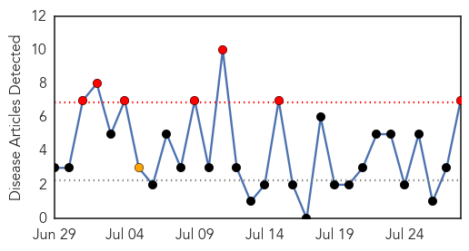

30 Day Trends
Web: 7 alerts, 1 warnings
Twitter: 0 alerts, 0 warnings
Top Articles:
- 0.998
- West Nile returns to NJ, along with concern about new mosquito-borne illness
- 0.980
- Cases of mosquito-borne illnesses continue to rise
- 0.962
- Venomous snakes, virulent amoebas: Health hazards that can ruin a summer vacation
- 0.956
- West Nile threat quiet, but weather could change that
- 0.865
- New West Nile & Chikungunya cases in Mississippi
- 0.839
- West Nile Shows up in Mosquitoes in Idaho
- 0.716
- Fifth human case of new virus reported
Top Tweets:
-
No tweets found for Jul 28, 2014
Web/News Articles
Tweets

Article Locations